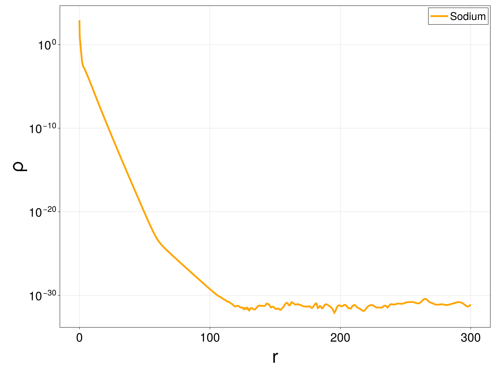
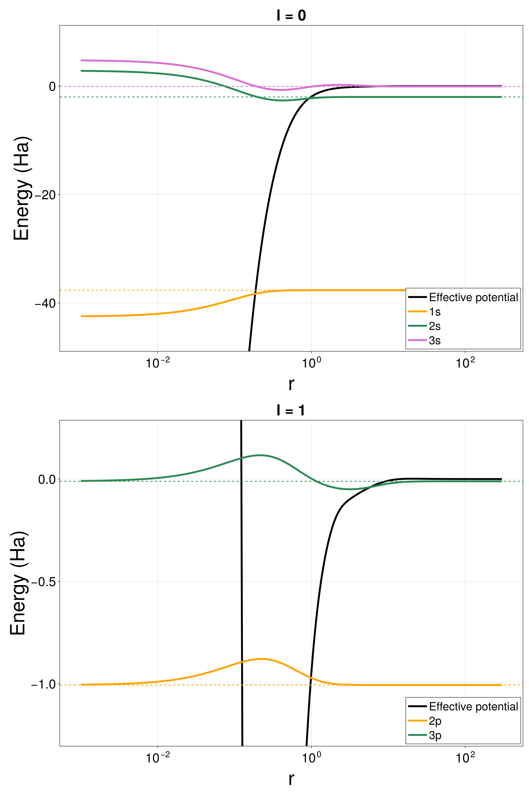
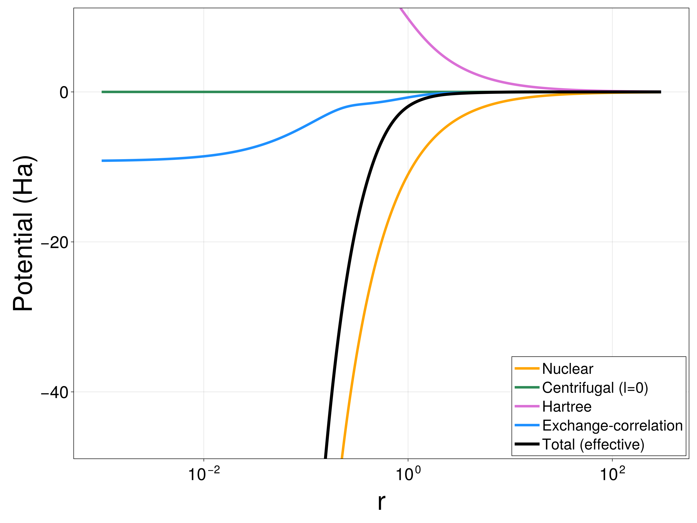
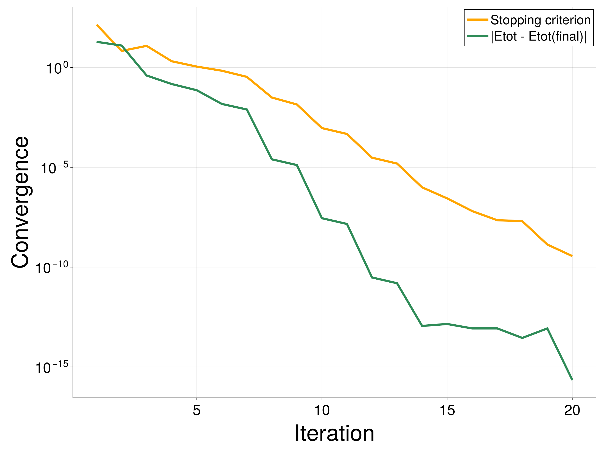
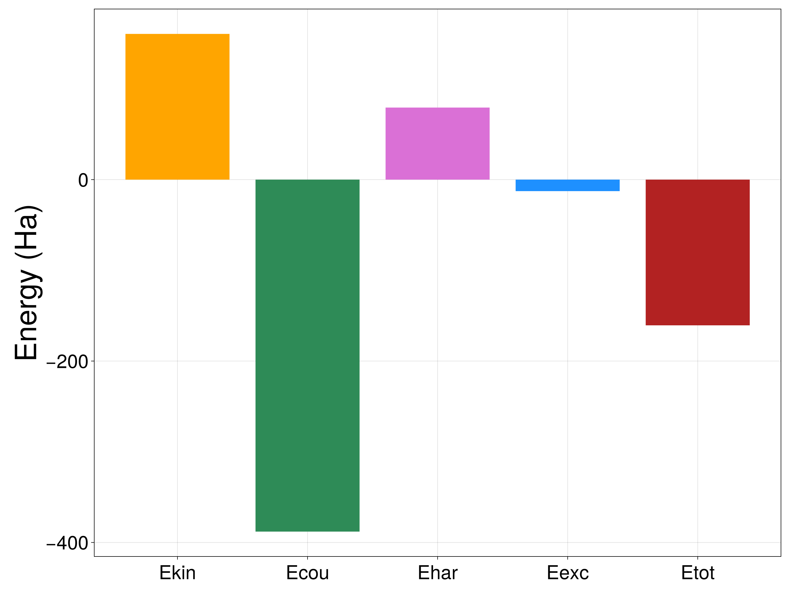

Reports, logs & plots
Once a calculation has converged, three complementary outputs help you inspect and archive it: a final text report, a per-iteration log, and publication-style plots.
Setup
This continues the running example (each manual page is self-contained, so we solve it again here):
using AtomicKohnSham
using Libxc
model = KSEModel(Z = 11, N = 11, ex = Functional(:lda_x; n_spin = 1), ec = NoFunctional(1))
mesh = expmesh(0, 500, 60; s = 1.2)
basis = P1IntLegendreBasis(mesh; ordermax = 10)
discretization = KSEDiscretization(basis, model; lh = 2, nh = 10,
fem_integration_method = GaussLegendre(basis, 2000))
alg = ODA(tinit = 0.6, aufbau = OptimizedAufbau(max_degen = 2, tol = 1e-1), scftol = 1e-9)
sol = groundstate(model, discretization, alg; maxiter = 100)results.txt: a final report
AtomicKohnSham.write_report — Functionwrite_report(sol::KSESolution, path::AbstractString)Write a self-contained text report of a converged (or stopped) Kohn–Sham computation to path.
The report describes:
- the run's identity and outcome (name, success flag, number of iterations, final stopping criterion),
- every parameter used to define the computation (model, discretization, algorithm), read from
sol.context, - the final energy decomposition,
- the occupied orbitals with their energies and occupation numbers.
Arguments
sol::KSESolution: Solution returned bygroundstate.path::AbstractString: Destination file path (typically"results.txt").
write_report(sol, "results.txt")
print(read("results.txt", String))Name = Sodium
Success = SUCCESS
niter = 20
Final stopping criterion = 5.569658855746759e-10
Data type = Float64
PARAMETERS
----------
Model
Z (nuclear charge) = 11
N (electrons) = 11
Hartree coefficient = 1
Exchange functional = Slater exchange
Correlation functional = None
Spin channels = 1
Discretization
Angular momentum cutoff (lh) = 2
Orbitals per channel (nh) = 10
Basis = P1IntLegendreGenerator (ordermax = 10)
Number of basis functions = 589
Mesh = Exponential Mesh (s = 1.2,)
Rmax = 500.0
Number of mesh points = 60
Integration method = GaussLegendre (npoints = 2000)
Algorithm = ODA
scftol = 1.0e-9
tinit = 0.6
frozen_t = false
maxiter_ls = 100
abstol_ls = 2.220446049250313e-12
reltol_ls = 2.220446049250313e-12
Aufbau = OptimizedAufbau
max_degen = 2
tol = 0.1
handle_degen_spin_1iter = true
ENERGIES
--------
Ekin (kinetic) = 160.62822758864036
Ecou (nuclear attraction) = -388.0065460113607
Ehar (Hartree) = 79.43155311453171
Eexc (exchange-correlation) = -12.681462279485856
Etot (total) = -160.6282275876745
OCCUPIED ORBITALS
-----------------
Occupation number =
1s : ε = -3.764758179762527e+01 n = 2.0
2s : ε = -2.007737456192821e+00 n = 2.0
2p : ε = -1.006028994917961e+00 n = 6.0
3s : ε = -7.701608708314467e-02 n = 0.999999999991612
3p : ε = -1.111637722765135e-02 n = 8.387956995647983e-12log.txt: per-iteration diagnostics
Rather than a verbosity flag on the solver, per-iteration diagnostics are written through the same CallbackSet mechanism used for any other callback — so log.txt keeps being updated even if the SCF loop is later interrupted or throws:
AtomicKohnSham.CallbackSet — TypeCallbackSetComposite callback container.
Groups multiple callbacks into a single object. At each SCF iteration, all registered callbacks are executed sequentially.
AtomicKohnSham.LogFileCallback — TypeLogFileCallback(io::IO)Callback that appends one line per SCF iteration to io, meant to be combined into a CallbackSet and passed to groundstate/KSESolver via the callback keyword. This replaces ad-hoc redirect_stdout logging: io is owned and closed by the caller, and logging keeps working even if the SCF loop throws.
Example
open("log.txt", "w") do io
write_log_header(io, model, alg, dis)
sol = groundstate(model, dis, alg; maxiter = 100,
callback = CallbackSet((LogFileCallback(io),)))
endAtomicKohnSham.write_log_header — Functionwrite_log_header(io::IO, model::KSEModel, alg::SCFAlgorithm, discretization::KSEDiscretization)Write the parameter block (identical to the one in write_report) at the top of a log.txt file, before the per-iteration lines appended by LogFileCallback.
open("log.txt", "w") do io
write_log_header(io, model, alg, discretization)
groundstate(model, discretization, alg; maxiter = 100,
callback = CallbackSet((LogFileCallback(io),)))
end
lines = split(read("log.txt", String), "\n")
println(join(lines[1:12], "\n")) # header
println("[...]")
println(join(lines[end-4:end-1], "\n")) # final iterationsPARAMETERS
----------
Model
Z (nuclear charge) = 11
N (electrons) = 11
Hartree coefficient = 1
Exchange functional = Slater exchange
Correlation functional = None
Spin channels = 1
Discretization
Angular momentum cutoff (lh) = 2
[...]
iter = 16 stop = 6.123195518566815e-8 Etot = -160.6282275876745 Ekin = 160.62822766652363 Ecou = -388.0065461412495 Ehar = 79.43155317337806 Eexc = -12.681462286326735 t = 0.3819660112501051
iter = 17 stop = 1.278862503971953e-8 Etot = -160.62822758767453 Ekin = 160.6282276046341 Ecou = -388.00654603805646 Ehar = 79.43155312662408 Eexc = -12.68146228087626 t = 0.3819660112501051
iter = 18 stop = 2.6598166420803435e-9 Etot = -160.62822758767456 Ekin = 160.62822759149756 Ecou = -388.00654601613144 Ehar = 79.43155311668835 Eexc = -12.681462279729033 t = 0.3819660112501051
iter = 19 stop = 5.569658855746759e-10 Etot = -160.6282275876745 Ekin = 160.62822758864036 Ecou = -388.0065460113607 Ehar = 79.43155311453171 Eexc = -12.681462279485856 t = 0.3819660112501051Plots
Plotting is a package extension: the plotting functions become available as soon as CairoMakie is loaded alongside AtomicKohnSham, with no extra setup:
using AtomicKohnSham, CairoMakieAtomicKohnSham.plot_density — Functionplot_density(sol::KSESolution, X)
plot_density(sols::AbstractVector{<:KSESolution}, X)Plot the radial electron density (log scale) on the radial points X, for one solution or several overlaid. Requires using CairoMakie.
AtomicKohnSham.plot_orbitals — Functionplot_orbitals(sol::KSESolution, X; l = nothing)Plot the occupied Kohn–Sham orbitals, each shifted to its orbital energy and overlaid on the effective potential of its angular momentum channel (see eval_effective_potential). Restrict to a single channel with l. Requires using CairoMakie.
AtomicKohnSham.plot_potentials — Functionplot_potentials(sol::KSESolution, X; l = 0, σ = 1)Plot the nuclear, Hartree, exchange–correlation, and centrifugal contributions to the effective potential of channel l, together with their sum. Requires using CairoMakie.
AtomicKohnSham.plot_convergence — Functionplot_convergence(sol::KSESolution)Plot the SCF stopping criterion and the total-energy convergence (|Etot_i - Etot_final|) against iteration, both on a log scale. Requires using CairoMakie.
AtomicKohnSham.plot_energy_breakdown — Functionplot_energy_breakdown(sol::KSESolution)Bar chart of the energy decomposition (Ekin, Ecou, Ehar, Eexc, Etot). Requires using CairoMakie.
Density
X = AtomicKohnSham.exprange(1e-3, 300, 2000; s = 1.5)
save("density.png", plot_density(sol, X))
Orbitals
Each occupied orbital is drawn at its own energy, overlaid on the effective potential of its angular momentum channel (one panel per l):
save("orbitals.png", plot_orbitals(sol, X))
Potentials
save("potentials.png", plot_potentials(sol, X; l = 0))
Convergence and energy breakdown
save("convergence.png", plot_convergence(sol))
save("energy_breakdown.png", plot_energy_breakdown(sol))

See the API Reference for the complete function index.